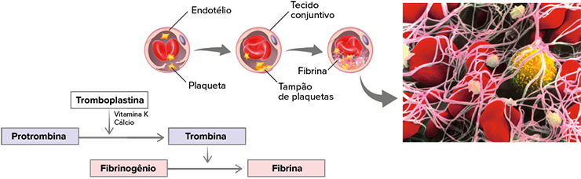

Eletromicrografia de varredura de alguns dos elementos figurados do sangue humano.
O tecido conjuntivo é um dos mais abundantes do corpo humano, sendo caracterizado pela presença de células imersas em uma extensa matriz extracelular. O tecido conjuntivo pode ser classificado de acordo com os tipos celulares e os componentes da matriz extracelular. Na eletromicrografia de varredura, colorizada artificialmente, podem ser observados os principais elementos figurados do sangue, um tipo especial de tecido conjuntivo humano. Os elementos em destaque são as hemácias (células vermelhas), os leucócitos (células amarelas) e as plaquetas (fragmentos celulares pardos), que desempenham importantes funções no metabolismo humano. Esses elementos figurados são produzidos na medula óssea vermelha a partir do tecido hematopoiético, outro tipo especial de tecido conjuntivo presente no interior de alguns ossos do corpo. Além do sangue e do tecido hematopoiético, neste capítulo também serão apresentadas as principais características e funções dos outros tipos de tecidos conjuntivos existentes no corpo humano.
- O que é matriz extracelular, também conhecida como substância intercelular?
- Quais são as principais funções desempenhadas pelos elementos figurados do sangue?
- Além do sangue e do tecido hematopoiético, que outros tipos de tecido conjuntivo formam o corpo humano?
Neste capítulo serão abordadas as habilidades EM13CNT202 .
Tecido conjuntivo
O tecido conjuntivo – também chamado de conectivo – é caracterizado pela presença de diversos tipos de células, envoltas por uma grande quantidade de matriz extracelular, geralmente sintetizada pelas células desse tecido. A composição
dessa matriz varia de acordo com cada tipo de tecido conjuntivo, sendo esse um dos critérios utilizados para sua classificação.
O tecido conjuntivo pode ser classificado em dois tipos principais: tecido conjuntivo propriamente
dito e tecido conjuntivo especializado. O tecido conjuntivo propriamente dito pode ser dividido em frouxo ou denso. Já o tecido conjuntivo especializado pode ser dividido em adiposo, cartilaginoso, ósseo, hematopoiético e sanguíneo.
Os diversos tipos de tecido conjuntivo se localizam em diferentes regiões do corpo, exercendo funções específicas, como transporte de moléculas, reserva energética, preenchimento de espaços entre os órgãos, defesa imunológica
e sustentação.
REECE, J. B. et al. Biologia de Campbell. 10. ed. Porto Alegre: Artmed, 2015.
Representação esquemática dos tipos de tecidos conjuntivos no corpo humano.
Tecido conjuntivo propriamente dito
O tecido conjuntivo propriamente dito possui ampla distribuição no corpo humano, sendo encontrado logo abaixo do tecido epitelial e ao redor dos órgãos, fazendo a ligação entre tecidos diferentes. A matriz extracelular é formada
por uma substância fundamental, composta por mucopolissacarídeos, como o ácido hialurônico, e por fibras proteicas, que podem ser divididas em três tipos: colágenas, elásticas e reticulares. Portanto, a matriz não apresenta
uma forma definida, sendo considerada amorfa.
As fibras colágenas são espessas e resistentes, sendo formadas pela proteína colágeno (resistente à tração). Por outro lado, as fibras elásticas são finas e com grande elasticidade,
sendo formadas pela glicoproteína elastina (extremamente elástica). Já as fibras reticulares também são formadas pela proteína colágeno, porém são organizadas em fibras mais finas que se ramificam, formando uma rede que promove
maior união entre os componentes do tecido.
Além da matriz extracelular, o tecido conjuntivo propriamente dito possui diversos tipos celulares. Uma das células mais abundantes nesse tecido é o fibroblasto, responsável
pela produção das fibras e de moléculas da substância fundamental. O macrófago, presente nesse tecido, realiza a fagocitose dos microrganismos invasores e contribui para a defesa imunológica do organismo. Há, além desses tipos
celulares, as células mesenquimatosas, que são células-tronco multipotentes, visto que podem se diferenciar em outras células específicas, contribuindo para a regeneração tecidual. O plasmócito é responsável pela produção e
liberação de anticorpos, neutralizando os antígenos invasores. Por fim, o mastócito é responsável pela produção e liberação de histamina, relacionada às reações alérgicas e aos processos inflamatórios do organismo.
REECE, J. B. et al. Biologia de Campbell. 10. ed.
Porto Alegre: Artmed, 2015.
Representação esquemática do tecido conjuntivo propriamente dito frouxo. Destaque para os tipos de células e de fibras comuns nesse tecido.
Eletromicrografia de transmissão de um adipócito, com destaque para o núcleo (roxo), o citoplasma (verde) e as vesículas de gordura (alaranjadas).
De acordo com a quantidade e a distribuição de fibras da matriz extracelular, o tecido conjuntivo pode ser classificado em dois tipos principais: frouxo e denso. O tecido conjuntivo frouxo é caracterizado por uma pequena
quantidade de fibras proteicas, mais espaçadas. Esse tecido é encontrado em todo o corpo humano e possui diversas funções, como apoiar e nutrir as células epiteliais, preencher espaços entre os órgãos e envolver nervos,
músculos e vasos sanguíneos.
O tecido conjuntivo denso é caracterizado por apresentar uma grande quantidade de fibras proteicas, mais próximas entre si, conferindo maior resistência e densidade. Nesse tecido predominam
as fibras colágenas e os fibroblastos, células responsáveis pela produção da matriz extracelular. Ele pode ser dividido em modelado e não modelado.
O tecido conjuntivo denso modelado apresenta uma grande concentração
de fibras colágenas orientadas paralelamente entre si e com elevado grau de compactação, conferindo muita resistência e pouca elasticidade ao tecido. O tecido conjuntivo denso modelado está presente nos tendões (ligam
músculos aos ossos) e nos ligamentos (ligam ossos entre si). Já o tecido conjuntivo denso não modelado apresenta fibras colágenas dispostas de maneira desorganizada, conferindo resistência e elasticidade ao tecido.
Esse tecido está presente na derme (camada da pele humana) e nas cápsulas protetoras dos órgãos, como rins, baço e fígado.
Tecido adiposo
O tecido adiposo é formado por células que armazenam gordura, denominadas adipócitos, e matriz extracelular reduzida. No corpo humano, o tecido adiposo se localiza, principalmente, abaixo da pele, formando a hipoderme ou
tela subcutânea, sendo uma importante fonte de energia. Além disso, a hipoderme protege contra traumas mecânicos e a perda de calor. O tecido adiposo também se localiza nos ossos, formando a medula óssea amarela, e
ao redor de outros órgãos, como rins e coração, protegendo-os contra traumas mecânicos. O tecido adiposo produz a maior parte de leptina, um hormônio que atua no hipotálamo induzindo a sensação de saciedade do apetite
no organismo.
Existem dois tipos de tecido adiposo: unilocular e multilocular. O tecido adiposo unilocular, também conhecido como gordura branca, é formado por células com poucas mitocôndrias e grandes vesículas
de lipídeos. Já o tecido adiposo multilocular, também conhecido como gordura marrom, é formado por adipócitos com muitas mitocôndrias e vesículas de gordura menores, sendo encontrado em filhotes de mamíferos. A gordura
marrom é um isolante térmico e ajuda a manter aquecido o corpo dos filhotes nos dias mais frios do ano.
Nos fetos humanos, o tecido cartilaginoso é abundante, porque forma o esqueleto embrionário. À medida que os fetos se desenvolvem, o tecido cartilaginoso é substituído pelo tecido ósseo, principal componente do esqueleto adulto. Já nos peixes cartilaginosos, como tubarões e arraias, o esqueleto é exclusivamente cartilaginoso, mesmo na fase adulta desses animais.
Tecido cartilaginoso. A. Eletromicrografia de varredura de um condrócito (azul) dentro de uma lacuna envolta por matriz cartilaginosa; B. Fotomicrografia de tecido cartilaginoso, com destaque para os condrócitos e para a matriz cartilaginosa ao redor
JUNQUEIRA, L. C. U.; CARNEIRO, J. Histologia básica. 12. ed. Rio de Janeiro: Guanabara Koogan, 2013.
Tecido ósseo. A. Eletromicrografia de varredura de um osteócito dentro de uma lacuna e de seus prolongamentos ramificados;
B. Representação esquemática das células componentes do tecido ósseo.
Tecido cartilaginoso
O tecido cartilaginoso, conhecido como cartilagem, localiza-se em diversas regiões do corpo humano, como orelhas, nariz, epiglote, laringe, traqueia, brônquios, costelas, discos intervertebrais e articulações. Esse tecido
tem consistência firme, mas não tão rígida como o tecido ósseo, e desempenha várias funções: os discos intervertebrais, por exemplo, absorvem os impactos dos movimentos corporais na coluna vertebral, e o tecido cartilaginoso
das articulações diminui o atrito entre os ossos.
A matriz extracelular do tecido cartilaginoso é formada por fibras (colágenas e elásticas) e substância fundamental, material produzido e secretado por células
jovens denominadas condroblastos (do grego khondros e blastos, que significam, respectivamente, “cartilagem” e “broto”). À medida que os condroblastos produzem matriz cartilaginosa e envelhecem, sua atividade diminui
e eles são chamados de condrócitos (do grego khondros e kytos, que significam, respectivamente, “cartilagem” e “célula”), células que ficam alojadas dentro de lacunas moldadas durante a produção da matriz cartilaginosa.
O tecido cartilaginoso é o único exemplo de tecido conjuntivo avascular (não possui vasos sanguíneos). Assim, sua nutrição depende do pericôndrio (do grego peri e khondros, que significam, respectivamente, “ao
redor” e “cartilagem”), tecido conjuntivo que envolve a cartilagem. O pericôndrio é rico em vasos sanguíneos, que transportam nutrientes e oxigênio para as células cartilaginosas e para as células mesenquimatosas (células-tronco),
capazes de se transformar em novos condroblastos, possibilitando o crescimento e a regeneração da cartilagem.
Tecido ósseo
O tecido ósseo é o principal constituinte dos ossos do corpo. Caracteriza-se por apresentar uma matriz extracelular extremamente rígida, rica em fibras colágenas e cristais de fosfato de cálcio, também conhecido como hidroxiapatita.
A matriz óssea é produzida pelos osteoblastos (do grego osteon e blastos, que significam, respectivamente, “osso” e “broto”), que são células dotadas de prolongamentos citoplasmáticos que se comunicam com as células
vizinhas. Após a secreção da matriz óssea, os osteoblastos ficam confinados dentro de lacunas e diminuem a sua atividade metabólica, passando a ser denominados osteócitos (do grego osteon e kytos, que significam, respectivamente,
“osso” e “célula”). Nos espaços ocupados pelos prolongamentos dos osteoblastos formam-se canalículos que permitem a comunicação entre as células e o transporte de oxigênio e nutrientes a partir do sangue.
A destruição
da matriz óssea é realizada por células denominadas osteoclastos (do grego osteon e klastos, que significam, respectivamente, “osso” e “quebra”), formadas pela fusão entre vários monócitos (células sanguíneas). Os osteoclastos
são células grandes e multinucleadas (podem ter de 6 a 50 núcleos) e se localizam nas superfícies ósseas. Essas células produzem enzimas e ácidos que degradam a matriz óssea em áreas lesionadas ou envelhecidas, possibilitando
a regeneração tecidual, que será desempenhada pelos osteoblastos. A ação conjunta dos osteoblastos e osteoclastos promove a constante regeneração e remodelação dos ossos do corpo.
Os osteoclastos também possuem
um papel de destaque para o equilíbrio na concentração de cálcio no organismo. Quando a concentração de cálcio no sangue diminui, as glândulas paratireoides liberam um hormônio (paratormônio) que ativa os osteoclastos,
redistribuindo o cálcio da matriz óssea para o sangue.
Nos ossos longos, como o fêmur, as extremidades são denominadas epífises e a parte central, diáfise. Nas epífises, encontra-se uma região
JUNQUEIRA, L. C. U.; CARNEIRO, J. Histologia básica. 12. ed.
Rio de Janeiro: Guanabara Koogan, 2013.
Representação esquemática do osso humano, com destaque para o ósteon e o osteócito.
cartilaginosa, chamada de disco epifisário, que, até o final da adolescência, é inteiramente substituída por tecido ósseo, determinando a interrupção do crescimento do organismo.
Os ossos são envolvidos pelo periósteo
(do grego peri e osteon, que significam, respectivamente, “ao redor” e “osso”) e internamente pelo endósteo (do grego endo e osteon, que significam, respectivamente, “dentro” e “osso”), membranas formadas por tecido
conjuntivo. Essas membranas são ricamente vascularizadas e repletas de células mesenquimatosas que se diferenciam em novos osteoblastos, favorecendo o crescimento dos ossos e a reparação de fraturas.
A análise
do corte transversal de um osso possibilita identificar duas regiões: osso compacto, mais externo e sem cavidades, e osso esponjoso, mais interno e com diversas cavidades. Essas subdivisões apresentam os mesmos tipos
celulares e estão organizadas em ósteons (sistemas de Havers). Cada ósteon é formado por um conjunto de camadas concêntricas de matriz óssea ao redor de um canal central (canal de Havers), revestido internamente pelo
endósteo. Por meio desses canais, os vasos sanguíneos e os nervos percorrem o osso longitudinalmente. Além dessas estruturas, os canais perfurantes (canais de Volkmann) interligam os canais centrais, periósteo e medula
óssea, possibilitando as trocas gasosas e a absorção de nutrientes.
A. Representação esquemática de um osso longo, com destaque para a medula óssea amarela e a vermelha; B. Fotomicrografia da medula óssea vermelha, com destaque para o megacariócito (verde), célula que origina as plaquetas.
Tecido hematopoiético
O tecido hematopoiético (do grego haima e poietikós, que significam, respectivamente, “sangue” e “origem”), também conhecido como hemocitopoiético, é um dos componentes da medula óssea vermelha presente no interior de alguns
ossos do corpo humano. Esse tecido produz constantemente células sanguíneas e outros tipos celulares. Nas crianças, a medula óssea vermelha se localiza no interior da maioria dos ossos. Durante o desenvolvimento embrionário,
parte da medula óssea vermelha interrompe a produção de células sanguíneas e passa a acumular gordura, transformando-se em medula óssea amarela, conhecida como tutano. Nos adultos, a medula óssea vermelha está presente
em costelas, vértebras, ossos pélvicos, osso esterno, clavículas, ossos cranianos e extremidades do úmero e do fêmur.
No tecido hematopoiético, são encontradas as células-tronco hematopoiéticas, capazes de se autoduplicar
e de se diferenciar em todos os tipos de células sanguíneas, além de outros tipos celulares do organismo humano (não formam todos os tipos de células, por isso se classificam como multipotentes). As células-tronco de
linhagem mieloide são responsáveis pela formação de plaquetas, hemácias, mastócitos, mieloblastos, basófilos, neutrófilos, acidófilos e monócitos. Já as células-tronco de linhagem linfoide são responsáveis pela formação
dos linfócitos B, linfócitos T e das células NK (natural killer).
Tecido sanguíneo
Popularmente chamado de sangue, é o fluido transportado no interior dos vasos do sistema cardiovascular. Uma característica marcante desse tecido é a separação das células por uma grande quantidade de matriz extracelular
líquida, ou plasma sanguíneo.
Esse tecido desempenha importantes funções na homeostase e no metabolismo energético. Uma delas é a defesa imunológica, já que o sangue apresenta células que atuam contra os agentes
invasores do organismo. Além disso, o sangue transporta gases, excretas, nutrientes e hormônios.
Apesar de apresentar aspecto homogêneo, uma análise microscópica revela que o sangue é uma mistura heterogênea, formada por duas partes distintas: o plasma sanguíneo (líquido) e os elementos figurados sanguíneos (células e fragmentos celulares).
REECE, J. B. et al. Biologia de Campbell. 10. ed. Porto Alegre: Artmed, 2015.
Representação esquemática de um vaso sanguíneo e dos principais elementos figurados do sangue.
Plasma sanguíneo
O plasma sanguíneo é uma solução aquosa (líquido amarelado) que constitui cerca de 55% do volume sanguíneo. Mais de 90% do plasma sanguíneo é constituído por água, sendo o restante formado por sais minerais, proteínas e
outras moléculas transportadas pelo sangue, como gases, nutrientes (glicose, aminoácidos e lipídeos), hormônios e resíduos nitrogenados.
Os sais minerais aparecem na forma de íons dissolvidos, os eletrólitos, e
são componentes essenciais do sangue. Entre eles podemos destacar o sódio (Na+ ), o potássio (K+ ), o cloro (Cl- ) e o cálcio (Ca2+). Os eletrólitos atuam no controle osmótico e no ajuste do pH sanguíneo, além de apresentarem
funções específicas nos diferentes tecidos do organismo.
As principais proteínas do sangue são a albumina, o fibrinogênio e os anticorpos. A albumina, produzida pelo fígado, é a proteína mais abundante do sangue
humano, sendo responsável pelo transporte de ácidos graxos livres, pela viscosidade do sangue e pela manutenção da pressão osmótica sanguínea. O fibrinogênio, também produzido pelo fígado, participa do processo de coagulação
sanguínea que pode ocorrer em um vaso rompido, por exemplo. Já os anticorpos, ou imunoglobulinas, são proteínas que têm função imunológica, já que atuam no reconhecimento de agentes infecciosos.
Elementos figurados sanguíneos
Os elementos figurados sanguíneos são células e fragmentos celulares presentes no sangue. De acordo com as características morfológicas e funcionais que apresentam, esses componentes recebem nomes específicos. São encontrados três grupos principais de elementos figurados no sangue: hemácias (células vermelhas), leucócitos (células brancas) e plaquetas (fragmentos celulares).
Hemácias
As hemácias, também conhecidas como glóbulos vermelhos ou eritrócitos (do grego erythrós e kytos, que significam, respectivamente, “vermelho” e “célula”), são os elementos mais abundantes do sangue. Em condições normais,
uma pessoa adulta possui cerca de 4 a 6 milhões de hemácias por mm3 de sangue. Sua principal função é o transporte de gás oxigênio (O2) dos pulmões para as demais células do organismo. O oxigênio é fundamental para
processos fisiológicos como a respiração celular e o metabolismo energético. Além disso, as hemácias transportam gás carbônico dos tecidos corporais, onde esse gás é produzido, para os pulmões.
A produção de hemácias,
a hematopoiese, dá-se na medula óssea e é estimulada pelo hormônio eritropoetina, produzido pelos rins. Na medula óssea, existem células precursoras nucleadas, denominadas eritroblastos. Essas células sintetizam hemoglobina,
perdem o núcleo e algumas organelas, como as mitocôndrias, e se diferenciam em hemácias. No sangue, as hemácias vivem cerca de 120 dias, e as células mais velhas são destruídas no fígado ou no baço.
REECE, J. B. et al. Biologia de Campbell. 10. ed. Porto Alegre: Artmed, 2015.
Representação esquemática do processo de formação de uma hemácia a partir de um eritroblasto.
A ausência de núcleo nas hemácias aumenta o espaço interno para a hemoglobina, proteína mais abundante das hemácias (cerca de 250 milhões de moléculas por célula), responsável pela cor vermelha do sangue.
Por outro
lado, por não apresentarem núcleo, as hemácias têm curto tempo de vida (cerca de 120 dias), já que elas não podem se reproduzir ou sintetizar os seus elementos constituintes sem o material genético.
Devemos observar
que apenas nos mamíferos as hemácias são anucleadas, sendo ovoides e nucleadas nos demais vertebrados, mas de núcleo não funcional. A hemoglobina é uma proteína de estrutura quaternária formada pela união de quatro
cadeias polipeptídicas: duas cadeias do tipo alfa e duas cadeias do tipo beta. Cada cadeia polipeptídica possui um grupo heme, contendo um átomo de ferro central (local onde se fixa o gás oxigênio). Em ambientes com
alta concentração de oxigênio, como nos pulmões, a hemoglobina se liga a esse gás formando a oxiemoglobina, forma na qual o oxigênio é transportado aos tecidos corporais. Nas regiões em que a concentração de oxigênio
é menor, esse gás desprende-se da hemoglobina e difunde-se para as células, onde será utilizado na respiração celular.
Por outro lado, nas regiões em que a concentração de gás carbônico é mais alta, a hemoglobina se liga a esse gás, formando a carboemoglobina, uma forma de transportar o gás carbônico dos tecidos para os pulmões. A afinidade da hemoglobina é maior para o gás oxigênio; portanto, o dióxido de carbono se associa somente quando a concentração de oxigênio é baixa. Em alguns casos, a combustão incompleta de materiais pode gerar o monóxido de carbono. Esse gás é muito tóxico e apresenta maior afinidade pela hemoglobina que o próprio gás oxigênio. Dessa forma, quando o monóxido de carbono se liga à hemoglobina, formando a carboxiemoglobina, essa molécula fica inviabilizada de transportar o gás oxigênio pelo corpo humano.
Questão resolvida
1
Unesp 2018 O professor de um cursinho pré-vestibular criou a seguinte estrofe para discutir com seus alunos sobre um dos tipos de célula do tecido sanguíneo humano.
Eu sou célula passageira
Que com o sangue se vai
Levando oxigênio
Para o corpo respirar
De acordo com a composição do tecido sanguíneo humano e considerando que o termo “passageira”
se refere tanto ao fato de essas células serem levadas pela corrente
sanguínea quanto ao fato de terem um tempo de vida limitado, responda:
- Que células são essas e em que órgão de um corpo humano adulto e saudável são produzidas?
- Considerando a organização interna dessas células, que característica as difere das demais células do tecido sanguíneo? Em que essa característica contribui para seu limitado tempo de vida, de cerca de 120 dias?
Resolução:
- As células são as hemácias (ou eritrócitos), que são produzidas na medula óssea vermelha, encontrada no interior de alguns ossos.
- Diferentemente das demais células sanguíneas, as hemácias são células anucleadas. A ausência de núcleo impede a síntese proteica, limitando o tempo de vida delas.
Leucócitos
Os leucócitos (do grego leukós e kytos, que significam, respectivamente, “branco” e “célula”), conhecidos como células brancas, são células maiores que as hemácias, esféricas e nucleadas. Essas células atuam na defesa imunológica
do organismo contra patógenos e substâncias invasoras. Os leucócitos podem ser classificados em dois grupos: granulócitos e agranulócitos. Os granulócitos possuem grânulos evidentes no citoplasma e núcleos de formatos variados,
separados em lóbulos. Por esse motivo, os granulócitos são chamados de polimorfonucleares (do grego polys e morphe, que significam, respectivamente, “muitos” e “forma”). Como exemplo de granulócitos há os neutrófilos, acidófilos
(eosinófilos) e basófilos.
Os agranulócitos, por sua vez, não possuem grânulos evidentes no citoplasma e cujos núcleos são esféricos. Por essa razão, são denominados mononucleares. Como exemplo de agranulócitos temos os
monócitos e os linfócitos. O quadro comparativo a seguir ilustra as principais diferenças entre os leucócitos:
Ao contrário das hemácias, os leucócitos podem sair do sistema circulatório para o líquido extracelular e o sistema linfático.
Em condições normais, uma pessoa adulta tem cerca de 5 mil a 10 mil leucócitos por mm3 de sangue
(valores de referência). O aumento do número de leucócitos, a leucocitose, é provocado por doenças como a leucemia (câncer na medula óssea) ou infecções. Já a diminuição do número de leucócitos, a leucopenia, é provocada por
produtos químicos, radiações ou certos medicamentos, como alguns utilizados na quimioterapia (tratamento contra o câncer).
Plaquetas
As plaquetas, conhecidas como trombócitos (do grego thrombos e kytos, que significam, respectivamente, “coágulo” e “célula”), são fragmentos celulares anucleados (sem núcleo) com formato irregular ou de disco (com cerca de 2 mm a 4 mm de diâmetro), revestidos pela membrana plasmática e por um espesso envoltório de glicoproteínas com propriedades adesivas. As plaquetas permanecem no sangue por cerca de duas semanas, sendo posteriormente destruídas e substituídas.
REECE, J. B. et al. Biologia de Campbell. 10. ed. Porto Alegre: Artmed, 2015.
Representação esquemática do processo de formação das plaquetas a partir do megacariócito na medula óssea vermelha.
A produção das plaquetas ocorre na medula óssea a partir de células denominadas megacariócitos (do grego mega, karyon e kytos, que significam, respectivamente, “grande”, “núcleo” e “célula”), originadas a partir das células-tronco
hematopoiéticas. Os megacariócitos são células com núcleo volumoso cujos prolongamentos citoplasmáticos longos e finos se projetam nos capilares da medula óssea vermelha. Dentro dos capilares, o estrangulamento dos
prolongamentos do megacariócito origina as plaquetas.
Em condições normais, uma pessoa adulta possui cerca de 200 mil a 400 mil plaquetas em cada milímetro cúbico de sangue (valores de referência), com importante
função na coagulação sanguínea, ou seja, na prevenção e interrupção das hemorragias (perdas de sangue). Esse processo é conhecido como hemostasia (do grego haima e stasis, que significam, respectivamente, “sangue” e
“parar”). Pessoas que apresentam valores menores que os de referência têm dificuldades na coagulação sanguínea e são mais propensas a hemorragias.
Coagulação sanguínea
Quando um vaso sanguíneo se rompe, as plaquetas são aderidas ao local da lesão, formando uma barreira que diminui a perda de sangue. Em seguida, as plaquetas aderidas e as células do local da lesão passam a liberar uma enzima, a tromboplastina. Essa enzima catalisa, na presença de cálcio e vitamina K, a reação de transformação da protrombina, enzima inativa, em trombina, enzima ativa. A trombina, então, catalisa a reação de transformação de fibrinogênio, proteína solúvel, em fibrina, proteína insolúvel. As moléculas de fibrina se entrelaçam, formando uma rede proteica no ferimento, impedindo a saída de sangue. A retenção de células no local origina o coágulo, também conhecido como trombo, que estanca a hemorragia. Depois de alguns minutos, o coágulo se contrai, expelindo um líquido claro denominado soro, que nada mais é que o plasma sanguíneo sem os fatores de coagulação
REECE, J. B. et al. Biologia de Campbell. 10. ed. Porto Alegre: Artmed, 2015.
Representação esquemática do processo de coagulação sanguínea e eletromicrografia de varredura de um coágulo sanguíneo. Destaque para a fibrina
(rede proteica), as hemácias (vermelhas), o leucócito (amarelo) e as plaquetas (fragmentos esbranquiçados).
1
Quais são os tipos de tecido conjuntivo?
2
Cite três funções do tecido adiposo.
3
Cite a função das seguintes células do tecido conjuntivo:
- adipócitos
- fibroblastos
- osteoclastos
- condroblastos
4
Observe as imagens a seguir e associe corretamente com os tipos de tecidos conjuntivos.
( )Tecido adiposo
( ) Tecido ósseo
( ) Tecido cartilaginoso
( ) Tecido conjuntivo propriamente dito
5
UFU-MG 2016 Quatro amigas brasileiras marcaram uma viagem para o Peru, onde pretendem conhecer e escalar diversas montanhas. Para se assegurarem de suas condições de saúde, submeteram-se a diversos exames, entre eles um hemograma. Os resultados encontram-se na tabela a seguir, na qual também constam os valores de referência das hemácias, leucócitos e plaquetas.
A amiga que terá problemas com a altitude, segundo o hemograma, é
- Paula
- Flávia.
- Cecília.
- Camila.
1
UEPG-PR 2017 Os tecidos conjuntivos unem e sustentam outros tecidos. Suas células podem ser de vários tipos e estão geralmente separadas umas das outras pela matriz intercelular. Quanto às características deste tecido e suas
células, assinale o que for correto.
01. O tecido conjuntivo denso modelado (ou tecido conjuntivo denso tendinoso) possui fibras grossas orientadas paralelamente, tornando-o bastante resistente e pouco elástico. Esse tecido constitui os tendões
e ligamentos.
02. Os fibroblastos são as células mais abundantes nos tecidos conjuntivos. Possuem forma estrelada e núcleo grande, além de retículo endoplasmático granuloso e complexo golgiense bem desenvolvidos, indicando
intensa atividade na produção de proteínas.
04. Os plasmócitos são células globosas do tecido conjuntivo denso, responsáveis pela atividade fagocitária. São particularmente bem desenvolvidos em alguns tecidos, como o endométrio.
08. O tecido adiposo é um tipo de tecido conjuntivo denso, o qual possui células alongadas com grande núcleo central e que armazenam gotículas de gordura, localizadas na periferia da membrana. Tem como função
principal a proteção mecânica de órgãos vitais, tais como coração, pulmões e intestino.
16. O tecido cartilaginoso apresenta matriz extracelular rígida. A alta vascularização desse tecido permite que o mesmo promova a nutrição dos tecidos adjacentes.
2
Uerj 2020 As plaquetas, componentes do sangue encontrados apenas em mamíferos, apareceram há cerca de 300 milhões de anos em uma espécie de mamífero semelhante ao atual ornitorrinco. Tais estruturas foram fundamentais para
a sobrevivência e posterior evolução dos mamíferos eutérios, caracterizados pela presença de uma placenta com tecidos muito invasivos. Para estes animais, as plaquetas possibilitaram o aumento da sobrevivência tanto das
fêmeas quanto dos filhotes após o parto.
Explique por que a presença de plaquetas aumentou a sobrevivência após o parto nos mamíferos eutérios. Explique, também, por que essas estruturas nos primeiros mamíferos não
produziram a mesma vantagem conferida aos mamíferos eutérios.
3
UEPG-PR 2018 A principal função do tecido ósseo é a sustentação esquelética do corpo. Assinale o que for correto sobre as características deste tecido conjuntivo especial.
01. O pericárdio é uma camada de tecido conjuntivo que envolve o tecido ósseo. Nele estão presentes células mesenquimais, as quais são responsáveis pela nutrição, fornecimento de gás oxigênio e reparação de
possíveis fraturas, permitindo a reconstrução óssea.
02. Por se tratar de um tecido altamente calcificado e pobre na irrigação de vasos sanguíneos, o tecido ósseo não possui potencial de regeneração no caso de fraturas. Os osteoblastos suplantam a ação dos
osteoclastos, inibindo a osteogênese do tecido.
04. Os osteoblastos são células com longas projeções citoplasmáticas e que produzem a matriz óssea. Quando essa célula amadurece, seus prolongamentos se retraem, sendo a célula óssea então denominada de
osteócito. Já os osteoclastos são células gigantes e multinucleadas que destroem áreas lesadas ou envelhecidas do osso.
08. A medula óssea vermelha se aloja no interior dos ossos longos, e é responsável pela produção de diversos tipos de células sanguíneas. Ainda, alguns ossos apresentam uma cavidade central onde se localiza
a medula óssea amarela (ou tutano), rica em células adiposas.
4
UEPG-PR 2018 Sobre as células sanguíneas e suas características, assinale o que for correto.
01. Nos vertebrados, a hemoglobina está presente na hemácia, a qual possui uma forma de disco achatada na região central, permitindo o aumento da superfície de contato da hemácia com os gases a serem transportados.
Além disso, a hemácia é flexível e pode dobrar-se para passar pelos vasos de menor calibre.
02. As hemácias dos humanos não possuem núcleo e são formadas na medula óssea a partir de células nucleadas, os eritroblastos. Em pessoas que vivem em locais de alta altitude, o organismo produz uma quantidade
maior de hemácias visando aumentar a captação de oxigênio.
04. As plaquetas são as células encontradas com menor frequência no sangue e têm função na produção de anticorpos responsáveis por atacar microrganismos invasores. Além disso, podem realizar a fagocitose do
complexo antígeno-anticorpo formado nas reações alérgicas.
08. Os neutrófilos são os leucócitos encontrados em maior frequência no sangue e recebem este nome porque apresentam grãos que se coram com o uso de corantes neutros. Podem realizar a fagocitose de bactérias
e digeri-las nos lisossomos.
SUPERAÇÃO
1
UFSC 2018 Um professor propôs aos alunos um desafio referente ao conteúdo dos quatro cartazes abaixo
Foi solicitado que os alunos realizassem os seguintes comandos:
I. Selecionar um cartaz que apresente apenas palavras relacionadas aos tecidos conjuntivos.
II. Selecionar duas palavras de cada cartaz relacionadas aos tecidos conjuntivos.
III. Selecionar uma palavra de cada cartaz relacionada ao mecanismo de defesa.
IV. Selecionar duas palavras relacionadas ao tecido epitelial e duas relacionadas ao tecido muscular.
V. Selecionar quatro palavras que correspondam às células fagocitárias.
Sobre o desafio e os assuntos relacionados, é correto afirmar que:
01 . não é possível executar dois dos comandos apresentados.
02. no comando I, pode-se selecionar o cartaz B ou o cartaz C.
04. no comando III, pode-se selecionar as palavras monócitos, macrófagos, hemácias e linfócitos.
08. pode-se selecionar as mesmas palavras para executar os comandos III e V.
16. no cartaz D, há palavras relacionadas com os tecidos conjuntivos, epitelial e muscular.
32. não é possível executar o comando IV, pois os melanócitos são células típicas dos tecidos conjuntivos.
64. no conjunto dos quatro cartazes, encontram- -se 12 palavras relacionadas aos tecidos conjuntivos, duas relacionadas ao tecido epitelial e duas relacionadas ao tecido muscular.
As questões selecionadas nesta seção são prioritariamente do Enem, mas questões de vestibulares diversos que apresentam características semelhantes aos itens do referido exame também foram usadas como recurso para estudo.
1
Enem 2015 A definição de queimadura é bem ampla, porém, basicamente, é a lesão causada pela ação direta ou indireta produzida pela transferência de calor para o corpo. A sua manifestação varia desde bolhas (flictenas) até formas mais graves, capazes de desencadear respostas sistêmicas proporcionais à gravidade da lesão e sua respectiva extensão. Muitas vezes, os primeiros socorros prestados à vítima, ao invés de ajudar, acabam agravando ainda mais a situação do paciente.
Disponível em: www.bombeiros-bm.rs.gov.br. Acesso em: 28 fev.2012 (adaptado).
Ao se deparar com um indivíduo que sofreu queimadura com formação de flictena, o procedimento de primeiros socorros que deve ser realizado antes de encaminhar o paciente ao hospital é
- colocar gelo sobre a flictena para amenizar o ardor.
- utilizar manteiga para evitar o rompimento da flictena.
- passar creme dental para diminuir a ardência da flictena.
- perfurar a flictena para que a água acumulada seja liberada.
- cobrir a flictena com gazes molhadas para evitar a desidratação.
2
Enem 2019 A eritropoetina (EPO) é um hormônio endógeno secretado pelos rins que influencia a maturação dos eritrócitos. Suas formas recombinantes, sintetizadas em laboratório, têm sido usadas por alguns atletas em esportes de resistência na busca por melhores resultados. No entanto, a administração da EPO recombinante no esporte foi proibida pelo Comitê Olímpico Internacional e seu uso considerado doping.
MARTELLI, A. Eritropoetina: síntese e liberação fisiológica e o uso de sua forma recombinante no esporte. Perspectivas Online:
biológicas & saúde, v. 10, n. 3, 2013 (adaptado).
Uma influência que esse doping poderá exercer na melhoria da capacidade física desses atletas está relacionada ao transporte de
- lipídios, para aumento do gasto calórico.
- ATP, para aumento da síntese hormonal.
- oxigênio, para aumento da produção de ATP.
- proteínas, para aumento da massa muscular.
- vitamina C, para aumento da integridade dos vasos sanguíneos.
3
Enem 2019 A poluição radioativa compreende mais de 200 nuclídeos, sendo que, do ponto de vista de impacto ambiental, destacam-se o césio-137 e o estrôncio-90. A maior contribuição de radionuclídeos antropogênicos no meio marinho ocorreu durante as décadas de 1950 e 1960, como resultado dos testes nucleares realizados na atmosfera. O estrôncio-90 pode se acumular nos organismos vivos e em cadeias alimentares e, em razão de sua semelhança química, pode participar no equilíbrio com carbonato e substituir cálcio em diversos processos biológicos.
FIGUEIRA, R. C. L.; CUNHA, I. I. L. A contaminação dos oceanos por radionuclídeos antropogênicos. Química Nova, n. 21, 1998 (adaptado).
Ao entrar numa cadeia alimentar da qual o homem faz parte, em qual tecido do organismo humano o estrôncio-90 será acumulado predominantemente?
- Cartilaginoso.
- Sanguíneo.
- Muscular.
- Nervoso.
- Ósseo.
4
4 Enem Um paciente deu entrada em um pronto-socorro apresentando os seguintes sintomas: cansaço, dificuldade em respirar e sangramento nasal. O médico solicitou um hemograma ao paciente para definir um diagnóstico. Os resultados estão dispostos na tabela:
Fonte: TORTORA, G. J. Corpo Humano: fundamentos de anatomia e fisiologia. Porto Alegre: Artmed, 2000 (adaptado)
Relacionando os sintomas apresentados pelo paciente com os resultados de seu hemograma, constata-se que
- o sangramento nasal é devido à baixa quantidade de plaquetas, que são responsáveis pela coagulação sanguínea
- o cansaço ocorreu em função da quantidade de glóbulos brancos, que são responsáveis pela coagulação sanguínea.
- a dificuldade respiratória ocorreu da baixa quantidade de glóbulos vermelhos, que são responsáveis pela defesa imunológica.
- o sangramento nasal é decorrente da baixa quantidade de glóbulos brancos, que são responsáveis pelo transporte de gases no sangue.
- a dificuldade respiratória ocorreu pela quantidade de plaquetas, que são responsáveis pelo transporte de oxigênio no sangue.